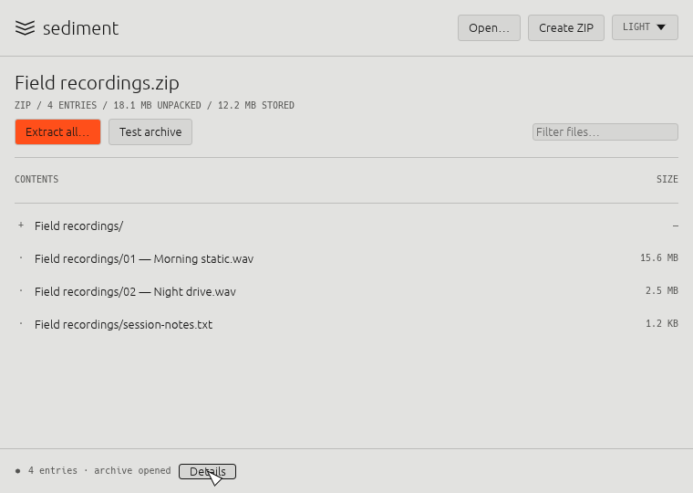
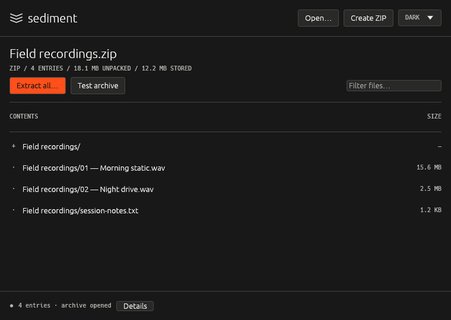

0.1.3 preview · Apple Silicon macOS
A small archive utility
that stays out of your way.
Open an archive, check what's in it, and extract it into a fresh folder. Or zip up files and folders. Local-first, with no accounts, no telemetry, and no network. Written in Rust, with a GUI and a CLI that share the same archive engine.

